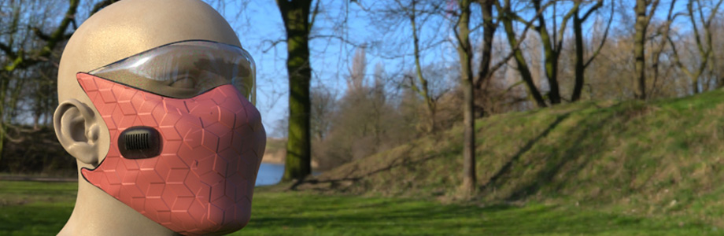
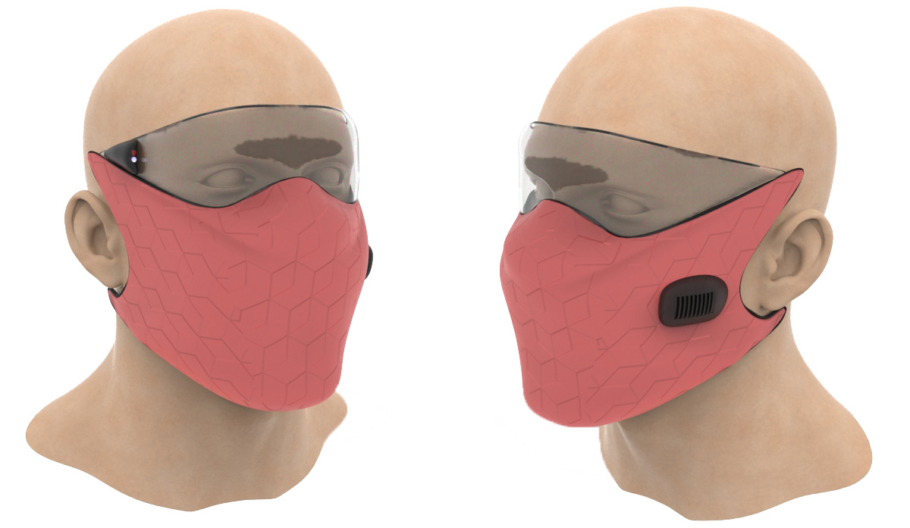
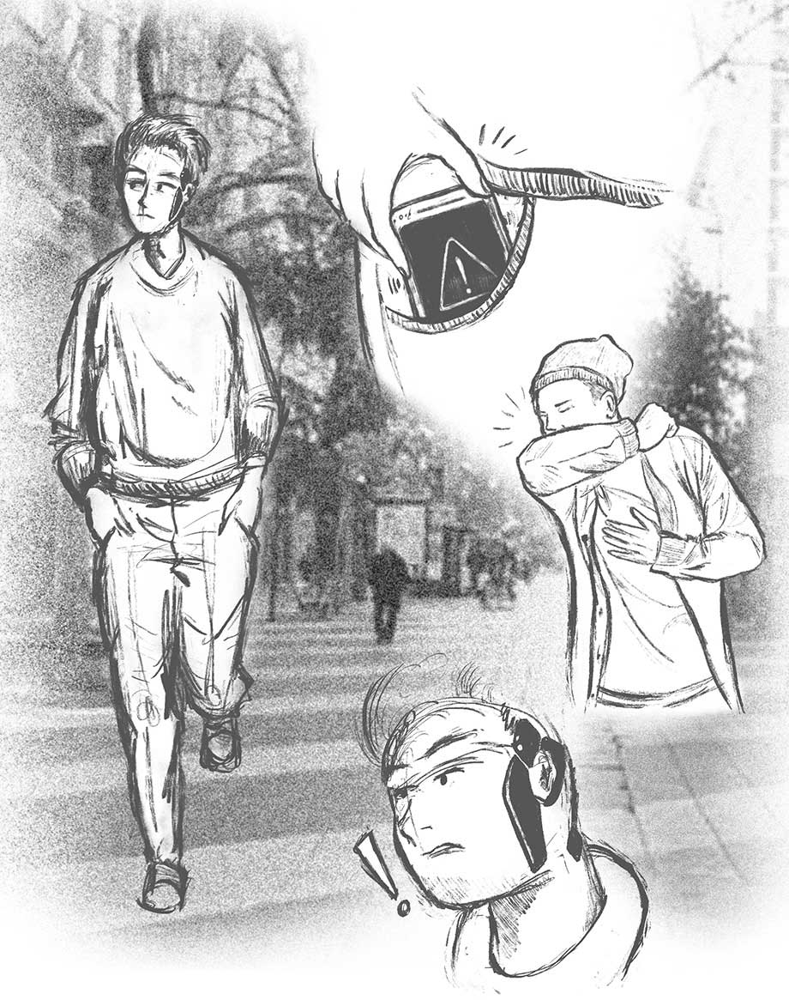
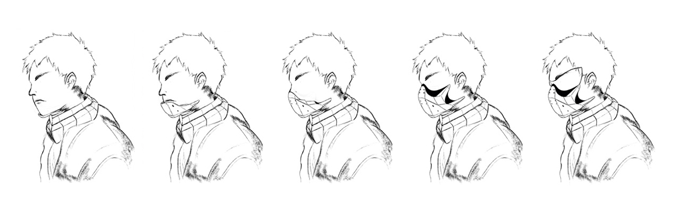
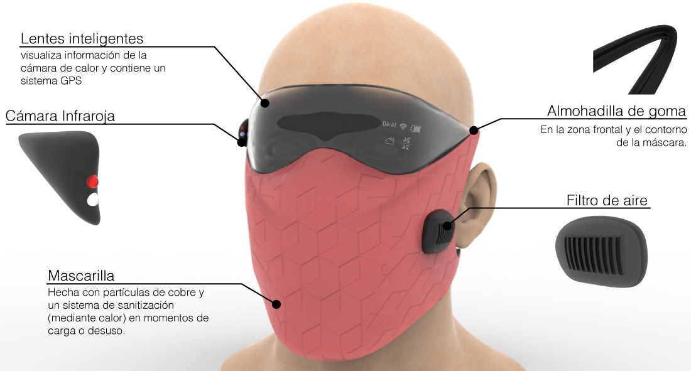
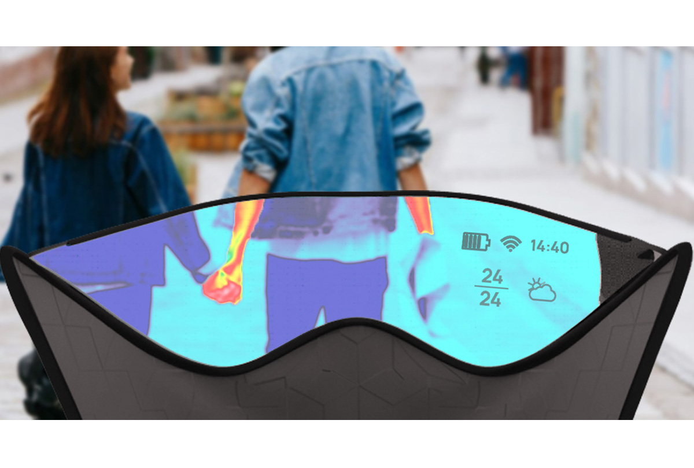

Los wearables como equipamientos de movilidad en un contexto de pandemia

Desarollamos un proyecto basado en la investigación del COVID-19, relacionado a cómo ha influido fuertemente en factores de movilidad. El inicio de este proyecto comienza con la búsqueda de referentes y capacidades tecnológicas con las que cuenta actualmente la sociedad. Dichas referencias, poseen elementos que nos aproximan a un concepto de diseño que podría enfrentar eventualmente al virus. Mediante la mezcla definición de tecnologías, adaptadas a la problemática.
Lo importante es plantearse preguntas y re-diseñar cómo van a funcionar los objetos de ahora en adelante. El tema de movilidad abre diversas aristas que nos obligan a re-plantear ciertas costumbres en nuestra rutina diaria. En esta ocasión se va a abordar el tema desde el uso de los Wearables como equipamiento en el futuro. Dicho esto nos planteamos las siguientes preguntas:
Creemos que uno de los equipamientos que se pueden desarrollar, para solucionar el problema de movilidad limitada, es una máscara con funciones inteligentes, pensada para poder salir al exterior sin correr el riesgo de contagiarse con enfermedades virales. Esto se traduce en un wearable de uso temporal, es decir, que su función brinde al usuario movilidad y precaución para circular en zonas de riesgo viral. Nosotros planteamos un dispositivo que cuente con funciones automatizadas mediante el uso de tecnologías existentes, que pueden potenciar esta máscara. Dichas tecnologías serán mencionadas más adelante.

Esta propuesta surge de la necesidad de las personas que no quieren desviarse de sus caminos o su necesidad de estar en una zona, por temas laborales o de cualquier ámbito. El recubrimiento de este wearable sería monitoreado por una placa inteligente que notifica los detalles en la pantalla de los lentes detalles como el procentaje de batería, probabilidad de riesgo para la salud y la duración del oxígeno al ser activado.
Durante el traslado o viaje el wearable comunica al usuario el riesgo de salud que corre respecto a la zona y el entorno que le rodea. Es decir, a medida que el usuario avanza en una zona, la tecnología detecta mediante sensores de calor la probabilidad de que en su entorno esté presente alguna persona portadora de virus, también toma en cuenta la base de datos de casos confirmados vs ubicación de estos.
 
El wearable incluye una data sobre el virus, en territorios de la ciudad. Los lentes de la máscara permiten ver, además de la temperatura corporal, las superficies en donde se encuentra el virus, como medida preventiva en virtud de la sensibilidad de la máscara y de la percepción del usuario.
Además de alertar visualmente al usuario, la máscara cuenta con un método de notificación del estado de la batería, oxígeno y proximidad de virus, mediante un aviso en el smartphone.
 
En uso